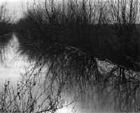

<!DOCTYPE HTML PUBLIC "-//W3C//DTD HTML 4.01 Transitional//EN"        "http://www.w3.org/TR/html4/loose.dtd">
<html lang="en">

<head>
<title>David Jauss:&nbsp; The Bridge - Henderson State University</title>
<meta http-equiv="Content-Language" content="en-us">
<meta http-equiv="Content-Type" content="text/html; charset=windows-1252">
<meta name="GENERATOR" content="Microsoft FrontPage 5.0">
<meta name="ProgId" content="FrontPage.Editor.Document">
<meta name="copyright" content="Copyright © 2002 Henderson State University">
<meta name="rating" content="General">
</head>

<body background="ARlogoborder.jpg" link="#006600" vlink="#006600" alink="#006600" bgcolor="#FFFFFF">

<div align="right">
  <table border="0" width="85%">
    <tr>
      <td width="100%" align="left">
        <blockquote>
          <h1><b><font color="#006600"><span style="mso-bidi-font-size: 12.0pt"><font size="5" face="Arial">David
          Jauss</font></span></font><span style="font-size:18.0pt;mso-bidi-font-size:12.0pt"><o:p><font color="#6F0000" face="Arial">
          </font>
          </o:p>
          </span></b></h1>
        </blockquote>
        <h1><b><font size="4">The Bridge</font></b><font size="2"><o:p>
        </o:p>
        </font></h1>
        <p class="MsoNormal" style="mso-layout-grid-align:none;text-autospace:none"><b><font size="7"><a href="images/harterN2.jpg">
        </a></font><font size="5">I</font></b><span style="font-size:12.0pt">f
        I had it to do over again, I'd still go to the funeral, but this time I
        wouldn't wear a disguise.<span style="mso-spacerun: yes">&nbsp; </span>And
        if I heard anyone say, &quot;What's <i>she</i> doing here?&quot; I'd
        just give them my Mona Lisa smile, then take a seat in a pew up front,
        right beside the grieving widow.<span style="mso-spacerun: yes">&nbsp; </span>Everyone
        would be staring at me, but I'd just sit there, ignoring them and
        looking only at the casket, trying to imagine what he looked like in
        there after the accident.<span style="mso-spacerun: yes">&nbsp; </span>And
        I wouldn't cry, not even once.<o:p>
        </o:p>
        </span></p>
        <p class="MsoNormal" style="mso-layout-grid-align:none;text-autospace:none"><span style="font-size:12.0pt">As
        it was, of course, I made a world-class fool of myself.<span style="mso-spacerun: yes">&nbsp;
        </span>And I don't even have the excuse of being drunk, since I've been
        on the wagon for nearly three years now--pretty much ever since he said
        he'd had enough of me.<span style="mso-spacerun: yes">&nbsp; </span>I
        don't know what made me decide to put on that stupid wig and sunglasses,
        but it wasn't a pitcher of margaritas.<span style="mso-spacerun: yes">&nbsp;
        </span>And it wasn't love. Don't you make the mistake of thinking that.<o:p>
        </o:p>
        </span></p>
        <p class="MsoNormal" style="mso-layout-grid-align:none;text-autospace:none"><span style="font-size:12.0pt">I
        read about his death in the Sunday paper.<span style="mso-spacerun: yes">&nbsp;
        </span>I was just turning the pages, and there his photo was, on the
        first page of the Arkansas section, right next to a shot of what looked
        like the Leaning Tower of Pisa but was actually a concrete bridge
        support stuck in a riverbank.<span style="mso-spacerun: yes">&nbsp; </span>I
        knew it was him even before I saw his name because of the missing
        eyebrow.<span style="mso-spacerun: yes">&nbsp; </span>I was with him the
        night he lost it on I-40.<span style="mso-spacerun: yes">&nbsp; </span>We
        shouldn't have taken the motorcycle out in the rain, but this was right
        after we were married and we were immortal in those days.<span style="mso-spacerun: yes">&nbsp;
        </span>I remember how the bike just suddenly disappeared out from under
        us, like we'd only been dreaming we were riding it, and we went skidding
        face first across the wet asphalt.<span style="mso-spacerun: yes">&nbsp; </span>No
        helmets, of course.<span style="mso-spacerun: yes">&nbsp; </span>He's
        lucky he didn't die then.<span style="mso-spacerun: yes">&nbsp; </span>Me,
        too.<span style="mso-spacerun: yes">&nbsp; </span>I got a road rash you
        wouldn't believe, but at least I didn't lose an eyebrow.<span style="mso-spacerun: yes">&nbsp;
        </span>As he liked to say, you never realize how important it is to have
        eyebrows until you lose one.<span style="mso-spacerun: yes">&nbsp; </span>I
        think he grew the mustache so people would look at it, not his missing
        eyebrow.<span style="mso-spacerun: yes">&nbsp; </span>But it didn't
        work.<o:p>
        </o:p>
        </span></p>
        <p class="MsoNormal" style="mso-layout-grid-align:none;text-autospace:none"><span style="font-size:12.0pt">I
        wonder now if the undertaker drew in an eyebrow for him.<span style="mso-spacerun: yes">&nbsp;
        </span>He probably didn't, since the casket was closed, but I like to
        think he did. If I'd still been his wife, I would have made sure he did.<o:p>
        </o:p>
        </span></p>
        <p class="MsoNormal" style="mso-layout-grid-align:none;text-autospace:none">It's
        funny he died helping to build a bridge.<span style="mso-spacerun: yes">&nbsp;
        </span>He loved bridges, especially rickety old ones.<span style="mso-spacerun: yes">&nbsp;
        </span>One year he bought us a calendar of covered wooden bridges in
        Vermont or New Hampshire or someplace like that.<span style="mso-spacerun: yes">&nbsp;
        </span>And he once said that if he knew how to take photographs, he'd
        take a whole book full of shots of old bridges and make a fortune
        selling it.<span style="mso-spacerun: yes">&nbsp; </span>He said there
        was a real market for bridge nostalgia.<span style="mso-spacerun: yes">&nbsp;&nbsp;
        </span>And a few times he drove me up to Heber Springs on his bike just
        so we could stand on this old wooden plank bridge they call the Swinging
        Bridge and feel it sway a little in the breeze over the river.<span style="mso-spacerun:
yes">&nbsp; </span>He loved that feeling, he said.<span style="mso-spacerun: yes">&nbsp;
        </span>He said he felt almost like he was about to float up into the air
        and fly away.<span style="mso-spacerun: yes">&nbsp; </span>Other people
        went to the Swinging Bridge to fish, but he went there just to stand.<span style="mso-spacerun: yes">&nbsp;
        </span>Frankly, I never thought the bridge was that big a deal.<span style="mso-spacerun: yes">&nbsp;
        </span>But I <span style="font-size:12.0pt">didn't say that to him, of
        course.<span style="mso-spacerun: yes">&nbsp; </span></span><span style="font-size:
12.0pt;mso-bidi-font-size:10.0pt;color:black">I think he knew, though, because
        once when we were standing there, swaying in the wind, he started to
        sing, real slow and somber, that old song &quot;Like a Bridge Over
        Troubled Water,&quot; and stupid me, I thought he was joking and started
        to laugh.&nbsp; He stopped singing right away then, and when I looked at
        him, I could tell he was hurt.&nbsp; I told him I wasn't laughing at
        him, that I was just thinking of a joke I'd heard at work, but I don't
        think he believed me.&nbsp; He was very smart, even if he did do some
        dumb things.&nbsp; Anyway, I've always felt bad about laughing at him
        that day.&nbsp; I should have known better.&nbsp; I should have
        remembered he had a deep, serious side.</span><span style="font-size:12.0pt"><o:p>
        </o:p>
        </span></p>
        <p class="MsoNormal"><span style="font-size:12.0pt">According to the
        paper, what happened was, a cable on a crane snapped and dropped the
        bridge support on him.<span style="mso-spacerun: yes">&nbsp; </span>He'd
        been guiding the base of it into the hole they'd dug for it in the
        riverbank.<span style="mso-spacerun: yes">&nbsp; </span>The coroner said
        he probably died instantly, but it took his co-workers and paramedics
        seven hours to dig him out from under the concrete column.<span style="mso-spacerun: yes">&nbsp;
        </span>They had to jackhammer their way through it.<span style="mso-spacerun: yes">&nbsp;
        </span>Sometimes when I close my eyes I can hear what it must have
        sounded like.<span style="mso-spacerun: yes">&nbsp; </span>Like a
        machine gun, only louder.<span style="mso-spacerun: yes">&nbsp; </span>And
        I wonder if he heard it, if only for a second, and tried to figure out
        what that sound was.<o:p>
        </o:p>
        </span></p>
        <p class="MsoNormal" style="mso-layout-grid-align:none;text-autospace:none"><span style="font-size:12.0pt">It
        shocked me to hear that he'd been killed, but what shocked me more was
        that the paper said he'd remarried just a few months before.<span style="mso-spacerun: yes">&nbsp;
        </span>Why none of my friends told me, I don't know.<span style="mso-spacerun: yes">&nbsp;
        </span>I wouldn't have minded.<span style="mso-spacerun: yes">&nbsp; </span>I'd
        have been happy for him, and I would have gone to his wedding just the
        same as I went to his funeral.<span style="mso-spacerun: yes">&nbsp; </span>Only
        I wouldn't have worn a disguise to the wedding.<span style="mso-spacerun: yes">&nbsp;
        </span>I would have come as myself.<span style="mso-spacerun: yes">&nbsp;
        </span>I would have waited in the reception line like everyone else to
        shake her hand and kiss him on the cheek.<span style="mso-spacerun: yes">&nbsp;
        </span>I would have said, &quot;I hope you'll be happy this time.&quot;<o:p>
        </o:p>
        </span></p>
        <p class="MsoNormal" style="mso-layout-grid-align:none;text-autospace:none"><span style="font-size:12.0pt">I
        don't want you to get the wrong impression.<span style="mso-spacerun: yes">&nbsp;
        </span>I stopped loving him long before he stopped loving me.<span style="mso-spacerun: yes">&nbsp;
        </span>When he told me he'd had it, we were already history as far as I
        was concerned.<span style="mso-spacerun:
yes">&nbsp; </span>But not loving someone doesn't mean you <i>hate</i> them.<span style="mso-spacerun: yes">&nbsp;
        </span>And I didn't hate him.<o:p>
        </o:p>
        </span></p>
        <p class="MsoNormal" style="mso-layout-grid-align:none;text-autospace:none"><span style="font-size:12.0pt">I
        didn't hate her either.<span style="mso-spacerun:
yes">&nbsp; </span>In fact, the reason I started crying at the funeral was that
        I felt <i>sorry</i> for her.<span style="mso-spacerun: yes">&nbsp; </span>Even
        from where I was sitting, a dozen or so rows behind her to the right, I
        could see her lips and chin were quivering, and once when she reached up
        to adjust her black veil, her hand just fluttered.<span style="mso-spacerun: yes">&nbsp;
        </span>She was trying so hard not to cry that I felt I had to do it for
        her.<span style="mso-spacerun: yes">&nbsp; </span>And did I ever do it.<span style="mso-spacerun: yes">&nbsp;
        </span>I've always been a loud crier, but now I was crying so hard that
        I was gulping air, which made my sobs sound kind of like seal barks.<span style="mso-spacerun: yes">&nbsp;
        </span>I can't help it.<span style="mso-spacerun: yes">&nbsp; </span>It's
        the way I cry.<span style="mso-spacerun: yes">&nbsp; </span>And isn't
        crying normal at a funeral?<span style="mso-spacerun: yes">&nbsp; </span>The
        way everyone turned and looked at me, you would have thought I was
        singing &quot;Happy Birthday&quot; or doing a striptease or something.<span style="mso-spacerun: yes">&nbsp;
        </span>Even the minister stopped telling lies about him to stare at me.<o:p>
        </o:p>
        </span></p>
        <p class="MsoNormal" style="mso-layout-grid-align:none;text-autospace:none"><span style="font-size:12.0pt">It
        was the same minister who'd married us, but it wasn't him who recognized
        me, it was the wife.<span style="mso-spacerun: yes">&nbsp; </span>How
        she knew it was me despite the curly blonde wig and sunglasses, I don't
        know, especially since we'd never met. Most likely she'd seen one of the
        photos he took of me, maybe even that one where I was all laid out on a
        blanket in a bikini like the main course at a picnic.<span style="mso-spacerun: yes">&nbsp;
        </span>Or maybe he'd told her about the way I laugh, which is a lot like
        the way I cry.<span style="mso-spacerun: yes">&nbsp; </span>He couldn't
        have told her how I cried.<span style="mso-spacerun: yes">&nbsp; </span>He
        never heard me cry.<span style="mso-spacerun: yes">&nbsp; </span>Not
        ever.<o:p>
        </o:p>
        </span></p>
        <p class="MsoNormal" style="mso-layout-grid-align:none;text-autospace:none"><span style="font-size:12.0pt">Anyway,
        she said my name.<span style="mso-spacerun:
yes">&nbsp; </span>She didn't shout it or anything.<span style="mso-spacerun: yes">&nbsp;
        </span>She just looked at me and said it.<span style="mso-spacerun: yes">&nbsp;
        </span>Then someone said, &quot;What's <i>she</i> doing here?&quot; and
        someone else said, &quot;No respect for the dead.&quot;<span style="mso-spacerun:
yes">&nbsp; </span>I also heard the word &quot;bitch,&quot; and more than once.<span style="mso-spacerun: yes">&nbsp;
        </span>And the word &quot;drunk,&quot; too.<span style="mso-spacerun: yes">&nbsp;
        </span>But like I said, I wasn't drunk.<span style="mso-spacerun: yes">&nbsp;
        </span>That's the thing about a reputation: once you've got one, it's
        got you.<span style="mso-spacerun: yes">&nbsp; </span>To his friends and
        relatives, I'll always be the drunk who cheated on him.<span style="mso-spacerun: yes">&nbsp;
        </span>He got to start his life over with a new wife, but me, I don't
        get a second chance.<o:p>
        </o:p>
        </span></p>
        <p class="MsoNormal" style="mso-layout-grid-align:none;text-autospace:none"><span style="font-size:12.0pt">I
        could be bitter, but I'm not.<span style="mso-spacerun: yes">&nbsp; </span>And
        I suppose I could move away from Little Rock, go someplace where no one
        knows me.<span style="mso-spacerun: yes">&nbsp; </span>But I like it
        here, and I got a good-paying job</span><span style="mso-char-type: symbol; mso-symbol-font-family: Symbol; font-size: 12.0pt; font-family: Symbol; mso-ascii-font-family: Times New Roman; mso-hansi-font-family: Times New Roman">-</span><span style="font-size:12.0pt">lab
        tech at Baptist Hospital.<span style="mso-spacerun: yes">&nbsp; </span>I
        deserve my second chance here, just like he did.<o:p>
        </o:p>
        </span></p>
        <p class="MsoNormal" style="mso-layout-grid-align:none;text-autospace:none"><span style="font-size:12.0pt">It
        didn't take me long to stop crying.<span style="mso-spacerun: yes">&nbsp;
        </span>One minute I was wailing and the next I was stone silent.<span style="mso-spacerun: yes">&nbsp;
        </span>It was not a dignified silence, though.<span style="mso-spacerun: yes">&nbsp;
        </span>I was trembling all over, and I could feel my face flush red-hot.<o:p>
        </o:p>
        </span></p>
        <p class="MsoNormal" style="mso-layout-grid-align:none;text-autospace:none"><span style="font-size:12.0pt">That's
        when his asshole brother came up to the pew where I was sitting and
        said, like he was trying to be polite, &quot;Would you please
        leave?&quot;<span style="mso-spacerun: yes">&nbsp; </span>I looked up at
        him, my mouth hanging open.<span style="mso-spacerun: yes">&nbsp; </span>Of
        all the people to ask <i>me</i> to leave!<o:p>
        </o:p>
        </span></p>
        <p class="MsoNormal" style="mso-layout-grid-align:none;text-autospace:none"><span style="font-size:12.0pt">&quot;You've
        got some nerve,&quot; I said.<o:p>
        </o:p>
        </span></p>
        <p class="MsoNormal" style="mso-layout-grid-align:none;text-autospace:none"><span style="font-size:12.0pt">His
        face was so red it looked sunburned.<o:p>
        </o:p>
        </span></p>
        <p class="MsoNormal" style="mso-layout-grid-align:none;text-autospace:none"><span style="font-size:12.0pt">&quot;Now's
        not the time,&quot; he said back, his voice shaking a little.<o:p>
        </o:p>
        </span></p>
        <p class="MsoNormal" style="mso-layout-grid-align:none;text-autospace:none"><span style="font-size:12.0pt">He
        got a second chance, too.<span style="mso-spacerun:
yes">&nbsp; </span>My ex-husband forgave his little brother but not me.<span style="mso-spacerun: yes">&nbsp;
        </span>When he found out, I told him it takes two to tangle, but he
        still blamed it on me and me alone.<o:p>
        </o:p>
        </span></p>
        <p class="MsoNormal" style="mso-layout-grid-align:none;text-autospace:none"><span style="font-size:12.0pt">&quot;I'm
        not going,&quot; I told his brother now.<o:p>
        </o:p>
        </span></p>
        <p class="MsoNormal" style="mso-layout-grid-align:none;text-autospace:none"><span style="font-size:12.0pt">The
        minister cleared his throat then and asked if he could resume the
        eulogy.<span style="mso-spacerun: yes">&nbsp; </span>The last I'd heard,
        he'd been saying something about the corpse having been a loving and
        devoted husband.<o:p>
        </o:p>
        </span></p>
        <p class="MsoNormal" style="mso-layout-grid-align:none;text-autospace:none"><span style="font-size:12.0pt">I
        stood up.<span style="mso-spacerun: yes">&nbsp; </span>&quot;Go right
        ahead,&quot; I said.<span style="mso-spacerun: yes">&nbsp; </span>&quot;Lie
        your ass off.<span style="mso-spacerun: yes">&nbsp; </span>The bastard
        left me.&quot;<o:p>
        </o:p>
        </span></p>
        <p class="MsoNormal" style="mso-layout-grid-align:none;text-autospace:none"><span style="font-size:12.0pt">Well,
        you can guess how people reacted to that.<span style="mso-spacerun: yes">&nbsp;
        </span>No one likes the truth.<span style="mso-spacerun: yes">&nbsp; </span>For
        a few seconds, there was nothing but arms and elbows and legs and
        shouting, and then I found myself outside, laying facedown on the
        sidewalk, my wig ripped off, my dress torn, and my head throbbing.<span style="mso-spacerun: yes">&nbsp;
        </span>There was a small crowd standing on the top step looking down at
        me, mostly men but also a couple of stocky women.<span style="mso-spacerun: yes">&nbsp;
        </span>One of the women was his brother's<o:p>
        </o:p>
        wife.<span style="mso-spacerun: yes">&nbsp;
        </span>She shook my wig at me and said, &quot;You didn't even have the
        guts to face us.<span style="mso-spacerun: yes">&nbsp; </span>You're
        pathetic.&quot;<span style="mso-spacerun: yes">&nbsp; </span>I rose onto
        my skinned knees then and reached up to touch my eyebrows.<span style="mso-spacerun:
yes">&nbsp; </span>They were still there.<span style="mso-spacerun: yes">&nbsp; </span>Then
        I started to laugh.<o:p>
        </o:p>
        </span> </p>
        <p class="MsoNormal" style="mso-layout-grid-align:none;text-autospace:none"><span style="font-size:12.0pt">&quot;Get
        out of here,&quot; a man's voice said.<span style="mso-spacerun: yes">&nbsp;
        </span>&quot;<i>Now</i>.&quot;<o:p>
        </o:p>
        </span></p>
        <p class="MsoNormal" style="mso-layout-grid-align:none;text-autospace:none"><span style="font-size:12.0pt">But
        I couldn't stop laughing.<span style="mso-spacerun: yes">&nbsp; </span>I
        stood up then, and my head went woozy, and for a moment I felt like I
        was back on the Swinging Bridge, my husband by my side, both of us
        swaying there in the breeze, so light somehow that the slightest puff of
        wind could lift us up off that bridge and into the blue, blue sky.<span style="mso-spacerun: yes">&nbsp;
        </span>And then I felt like I really <i>was </i>floating up into the sky, just
        like a balloon or a saint, and he was floating there beside me, holding
        my hand.<span style="mso-spacerun: yes">&nbsp; </span>I knew that any
        second I'd drift back down to the earth, to the cracked concrete
        sidewalk, the scowls and jeers, to the realization that I'd been an
        utter fool and always would be, but I didn't care, at least not then.<span style="mso-spacerun: yes">&nbsp;
        </span>I was with him, and they weren't.<span style="mso-spacerun: yes">&nbsp;
        </span>I was with him, and he was holding my hand, and it felt so real,
        so real and so right.<o:p>
        </o:p>
        </span></p>
        <p class="MsoNormal" style="mso-layout-grid-align:none;text-autospace:none">&nbsp;</p>
        <p class="MsoNormal" style="mso-layout-grid-align:none;text-autospace:none" align="right"><font size="2">(Photograph
        by N. Harter)</font><span style="font-size:12.0pt"><o:p>
        </o:p>
        </span></td>
    </tr>
  </table>
</div>

<p align="center"><a title="Select to go to the Home Page" href="2000.html">HOME</a></p>

</body>

</html>